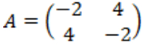
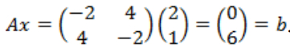
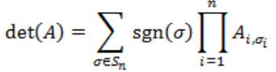

HDU4795. Easy Problem Once More
内存限制：4000/2000 MS (Java/Others) 时间限制：32768/32768 K (Java/Others)
题目描述
Define matrix  , if for every m(1 ≤ m ≤ n),
, if for every m(1 ≤ m ≤ n),

then matrix A can be called as partially negative matrix. Here matrix
 , and {i1,..,im} is a sub set of {1,..,n}.If you are not familiar with determinant of a matrix, please read the Note part of this problem.
, and {i1,..,im} is a sub set of {1,..,n}.If you are not familiar with determinant of a matrix, please read the Note part of this problem.
For example, matrix is a partially negative matrix because |-2|, |-6| and
is a partially negative matrix because |-2|, |-6| and are negative.
are negative.
A symmetric matrix is a square matrix that equals to its transpose. Formally, matrix A is symmetric if A = AT. For example, is a symmetric matrix.
is a symmetric matrix.
Given two N-dimensional vector x and b, and we guarantee that there will be at least
one 0 value in vector b. You task is to judge if there exists a symmetric partially
negative matrix A, which fulfills Ax = b.
, if for every m(1 ≤ m ≤ n),then matrix A can be called as partially negative matrix. Here matrix
, and {i1,..,im} is a sub set of {1,..,n}.If you are not familiar with determinant of a matrix, please read the Note part of this problem.For example, matrix
is a partially negative matrix because |-2|, |-6| andare negative.A symmetric matrix is a square matrix that equals to its transpose. Formally, matrix A is symmetric if A = AT. For example,
is a symmetric matrix.Given two N-dimensional vector x and b, and we guarantee that there will be at least
one 0 value in vector b. You task is to judge if there exists a symmetric partially
negative matrix A, which fulfills Ax = b.
输入格式
There are several test cases. Proceed to the end of file.
Each test case is described in three lines.
The first line contains one integer N (2 ≤ N ≤ 100000) .
The second line contains N integers xi (-1000000 < xi < 1000000, 1 ≤ i ≤ N), which is vector x.
The third line contains N integers bi (-1000000 < bi < 1000000, 1 ≤ i ≤ N), which is vector b. There will be at least one bi which equals to zero.
Each test case is described in three lines.
The first line contains one integer N (2 ≤ N ≤ 100000) .
The second line contains N integers xi (-1000000 < xi < 1000000, 1 ≤ i ≤ N), which is vector x.
The third line contains N integers bi (-1000000 < bi < 1000000, 1 ≤ i ≤ N), which is vector b. There will be at least one bi which equals to zero.
输出格式
For each test case, output “Yes” if there exists such a matrix A, or “No” if there is no such matrix.
样例
样例输入
2
2 1
0 6样例输出
Yes
HintThere exists a symmetric partially negative matrix 

Note
Determinant of an n × n matrix A is defined as below:

Here the sum is computed over all permutations σ of the set {1, 2, ..., n}.
A permutation is a function that reorders this set of integers.
The value in the ith position after the reordering σ is denoted σi.
For example, for n = 3, the original sequence 1, 2, 3 might be reordered to σ = [2, 3, 1],with σ[sub]1[/sub] = 2, σ[sub]2[/sub] = 3, and σ[sub]3[/sub] = 1.
The set of all such permutations (also known as the symmetric group on n elements) is denoted Sn.
For each permutation σ, sgn(σ) denotes the signature of σ, a value that is +1
whenever the reordering given by σ can be achieved by successively interchanging two entries an even number of times,
and −1 whenever it can be achieved by an odd number of such interchanges.